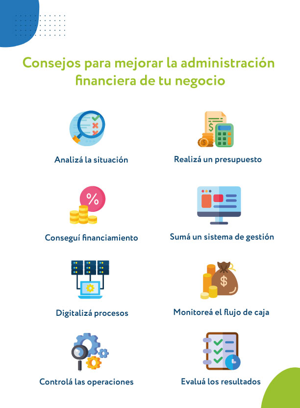
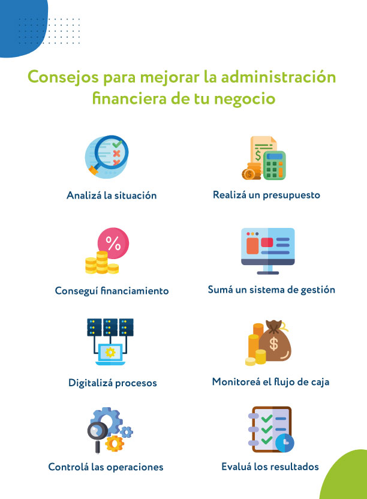

Clasificación de gastos
Es crucial que puedas distinguir entre los diferentes tipos de gastos. Esto te ayudará a elaborar un presupuesto adecuado y detectar oportunidades para ahorrar. A continuación te presento los diferentes tipos de gastos que puedes encontrar:
Gastos Fijos
Se trata de aquellos que permanecen estables y se repiten cada mes. No varían, o lo hacen mínimamente, y deben pagarse sin excepción. Constituyen el pilar de tu presupuesto.
Ejemplos:- El alquiler de tu hogar
- La hipoteca
- Los pagos mensuales de un vehículo o un seguro
- Suscripciones a servicios (como Netflix, Spotify)
Gastos variables
Estos son gastos que cambian cada mes y dependen de tu consumo o decisiones. Son más flexibles y, por ende, más fáciles de reducir si quieres ahorrar.
Ejemplos:- La factura de electricidad
- El gasto en el supermercado
- El costo de la gasolina
- Salidas a restaurantes o actividades recreativas
Gastos hormiga
Estos son pequeños gastos que, individualmente, pueden parecer irrelevantes, pero cuando se suman a lo largo del mes, impactan considerablemente en tus finanzas.
Ejemplos:- El café que adquieres diariamente
- El snack de la tarde
- Propinas frecuentes


 
